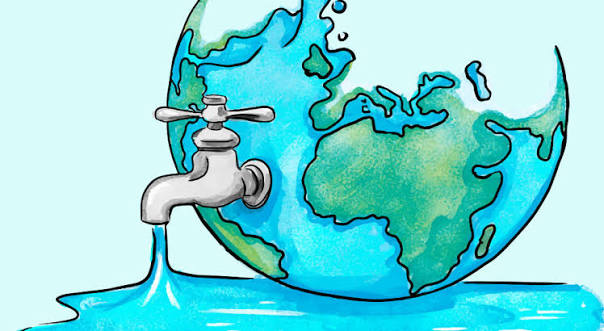
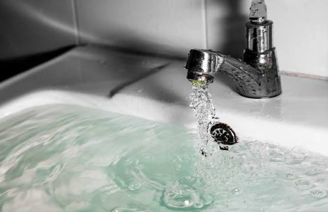
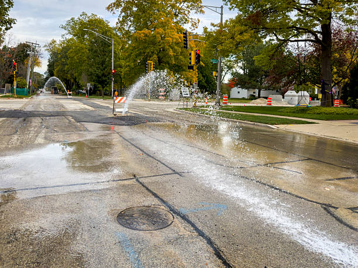

Identifica el problema
Elige qué estás viendo: una fuga en casa, en la calle o agua con color u olor extraño.
Red vecinal por el agua · ODS 6
Un caño que gotea o una tubería rota en la calle pueden desperdiciar miles de litros antes de que alguien avise. En Gota a Gota te ayudamos a reconocer el problema, saber qué hacer y reportarlo en pocos pasos.
Quiero Ayudar Conocer la iniciativa

Quiénes somos
Gota a Gota es una iniciativa que conecta a vecinos de barrios urbanos con información clara sobre fugas y calidad del agua. Muchas personas notan el problema, pero no saben si es grave, qué hacer primero ni a quién avisar.
Orientar al vecino según el tipo de problema y simular un reporte ordenado desde una sola web.
El proyecto se vincula con el ODS 6: garantizar la disponibilidad de agua y su gestión sostenible y el saneamiento para todos.
Cómo funciona
Elige qué estás viendo: una fuga en casa, en la calle o agua con color u olor extraño.
Prueba un reporte con una referencia de ubicación y un detalle de lo que ves.
Revisa el video y la guía para entender por qué cada fuga importa.
Cómo ayudar
Revisa los países y proyectos, cuántas personas se benefician y qué tipo de intervención se realiza.
Escoge un monto, la moneda y si quieres donar una vez o cada mes.
Elegir montoConfirma el resumen de tu donación y recibe un mensaje de confirmación.
Ir a donarCómo sería el servicio
La red vecinal reuniría los reportes de un mismo sector para evitar avisos duplicados.
Una persona voluntaria revisaría la ubicación y la prioridad de cada reporte.
El reporte se compartiría con la empresa de agua o el municipio para su atención.


“Vi el charco en la esquina durante una semana. No sabía a quién avisar, así que no hice nada”.
Relato que representa la necesidad del usuario.
HU-002 · Realizar una donación
Elige un monto predefinido u otro monto, la moneda y la frecuencia. Antes de donar verás un resumen para confirmarlo.
Simulación: no se realizan cobros, no se piden datos bancarios y no se guarda información.